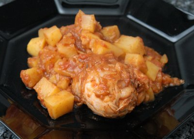

| Zutaten für 4-6 Personen | |
| 1 kg | Hühnerstücke |
| 2 El | Sonnenblumenöl |
| 2 | Zwiebeln |
| 3 | Zimtstangen |
| 3 | Kardamom Kapseln |
| 1 | Knoblauchzehe |
| 1 Stück | Ingwer |
| 3 | Tomaten, enthäutet und gehackt |
| 2 El | mildes Currypulver oder Garam Masala |
| 6 | Curryblätter |
| Salz | |
| 1 Tasse | Wasser oder Kokosnuss Milch |
| 4 | Kartoffeln |
| frische Korianderblätter | |
Öl in einem Bräter erhitzen und die Zwiebeln langsam mit dem Zimt und den aufgebrochenen Kardamom Kapseln 10 Minuten anbraten. Die Hühnerstücke beigeben und den Knoblauch dazu pressen und den Ingwer beigeben. Zudecken und 20 Minuten kochen lassen. Zwischendurch umrühren. Das Fleisch sollte eine gute Farbe annehmen.
Tomaten beifügen, Curry oder Garam Masala zugeben. Curryblätter beigeben und gut mischen. Salz zufügen sowie Wasser oder Kokosnussmilch.
Kartoffeln in Würfel schneiden und dazu geben. 30 Minuten sanft weiter kochen. Dann eine handvoll gehackte Korianderblätter zugeben und abschmecken.
Mit Basmati Reis servieren oder Rotibroten. Ein süsses Chutney oder Mango Pickle dazu reichen>
Einen Tomaten Salmbal dazu machen: Gehackte Tomaten mit gehackten Zwiebeln und frischem Chili, etwas Essig und Salz und Pfeffer mischen. Oder eine Schüssel Gurke mit Joghurt und Minze.
Cape Town Food, p88
Very nice, RE, April 2004
What makes this dish great is the cardamom flavour! RE, 1.3.2008
@LINKBACK_TAG@ @WAKELOCK@